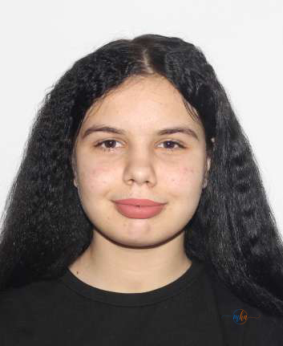

📷 Lulea Alexandra Ionela, 15 ani — DISPĂRUTĂ
Poliția municipiului Drobeta-Turnu Severin a fost sesizată de către un educator din cadrul Centrului Rezidențial pentru Copilul Separat de Părinți, despre faptul că beneficiara Lulea Alexandra Ionela, în vârstă de 15 ani, nu a mai revenit în centru după finalizarea orelor de curs.
🔍 Semnalmentele persoanei dispărute
| Nume | Lulea Alexandra Ionela |
| Vârstă | 15 ani |
| Înălțime | 1,70 m |
| Greutate | 70 kg |
| Ochi | Căprui |
| Păr | Lung, negru |
| Îmbrăcăminte | Blugi albastru, tricou negru cu buline, curea neagră |
| Încălțăminte | Sport alb-negru |
Minora nu este la prima plecare voluntară
Potrivit informațiilor furnizate de Poliția municipiului Drobeta-Turnu Severin, minora nu este la prima plecare voluntară. Autoritățile au deschis procedurile specifice și solicită sprijinul comunității pentru a o localiza cât mai rapid.
Dacă o recunoști, sună imediat la 112
Oricine poate oferi detalii cu privire la persoana dispărută este rugat să apeleze de urgență:
📞 112
SNUAU — Serviciul Național Unic Apeluri de Urgență
🚨 Sună acum la 112
sau înștiințează cea mai apropiată unitate de poliție
Dispariția minorilor reprezintă una dintre situațiile de urgență la care Poliția Română răspunde prioritar, activând protocoale specifice de căutare și intervenție. În cazul persoanelor minore dispărute, fiecare oră contează, iar informațiile furnizate de comunitate pot face diferența. Dacă ați văzut-o pe Lulea Alexandra Ionela, în vârstă de 15 ani, în Drobeta-Turnu Severin sau în împrejurimi, nu ezitați să apelați imediat numărul de urgență 112. Potrivit legislației române, sesizarea dispariției unui minor este o obligație civică, iar informațiile transmise autorităților sunt tratate cu confidențialitate. MehedintiAzi.ro urmărește cazul și va reveni cu actualizări imediat ce minora va fi găsită.